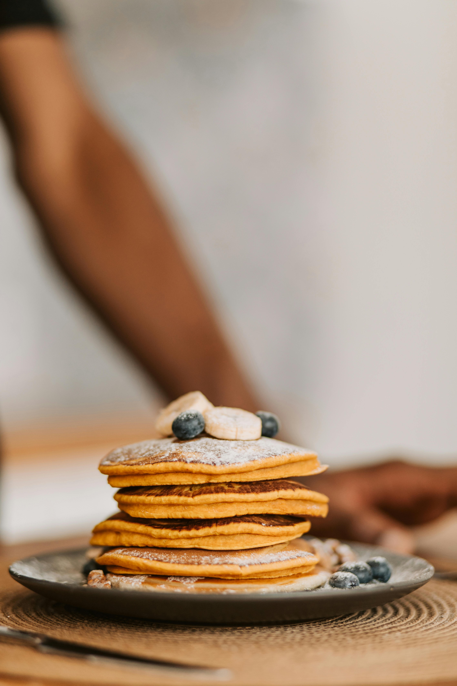

All-time Favourite Banana Pancakes
Back to Favourite Recipes
One day I decided to give this recipe a go and it's been my favourite banana pancakes recipe ever since. It's a recipe by Kristyn Merkley and it produces the most fragrant and soft banana pancake I've ever
eaten. Let's dive right in to the recipe.

What you'll need:
- 180g of all-purpose flour
- 50g of sugar
- 10g of baking powder
- 6g of salt
- 2 medium ripe bananas
- 240ml of milk
- 2 eggs
- 1tbsp of vanilla extract
- 48g of vegetable oil
Instructions
- You want to start by mixing all the dry ingredients like flour, sugar, baking powder, and salt.
- Mash the bananas as smooth or as chunky as you prefer then add in milk, eggs, vanilla extract, and vegetable oil. Mix everything until combined.
- Mix together the dry and wet ingredient by pouring either one into the other bowl. Don't worry if there are still a few lumps.
- Preheat your skillet/pan/griddle over medium heat. I find it easier to use a ladle to scoop the right amount of batter into the pan. Cook for a few minutes or until the edges start to bubble and flip your pancake.
- Once everything's cooked, serve your pancake with the toppings that you enjoy. I personally like some extra caramnelized banana slices, a scoop of yoghurt, peanut butter, and a drizzle of honey.
Have it once and you'll keep wanting to have it on a slow morning.